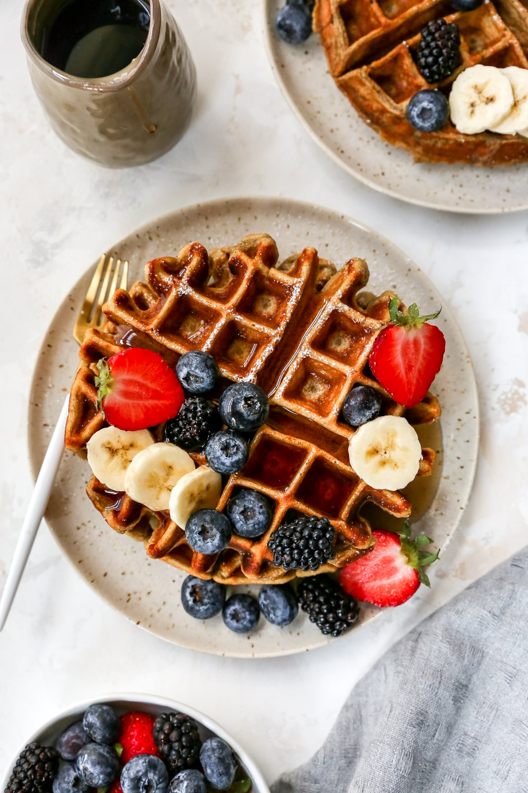

Protein Waffles

Description
These protein waffles are a great way to get your required protein intake.
the best of both worlds, they are both nutritious and delicious.
Ingredients
- 1 scoop (or slightly less, about 17 to 20g) protein powder*
- 1/8 cup (or slightly less, about 16 to 20 grams) Kodiak Cakes mix
- K1/4 cup (or slightly less) egg whites from a carton + 2-3 tablespoons or more of water for a thinner consistency,
I typically use about 40 grams egg whites and then enough water to get desired consistency
- 1-2 tablespoons (about 20 grams) pumpkin purée from a can or mashed banana
- 1/2 teaspoon baking powder , optional
(I typically leave this out and would only use if I
weren't using the Kodiak Cakes mix)
- 1/4 teaspoon ground cinnamon or pumpkin spice, optional (I don't use)
- 1/4 teaspoon pure vanilla extract , optional (I don't use)
- Optional for serving: maple syrup, almond butter,
Walden Farms calorie free pancake syrup and/or fresh fruit
Directions
- Heat waffle iron.
- Stir all ingredients together in a small bowl, until batter is free from most clumps. Add as much water as needed to
get a waffle batter consistency. The batter should be thick, but slightly pourable
too.
- Once waffle iron is heated, spray top and bottom of iron with nonstick cooking spray and pour batter over bottom of the iron. Natural nonstick cooking sprays do not work well in this recipe because this waffle tends
to stick easily. Use the back of your spoon to spread the batter evenly over the iron.
- hen waffle iron goes off, transfer waffle to a plate and top with your favorites.
Serve immediately or store in a covered container to reheat and enjoy later.
Credit to "Kim" of kimscravings.com.